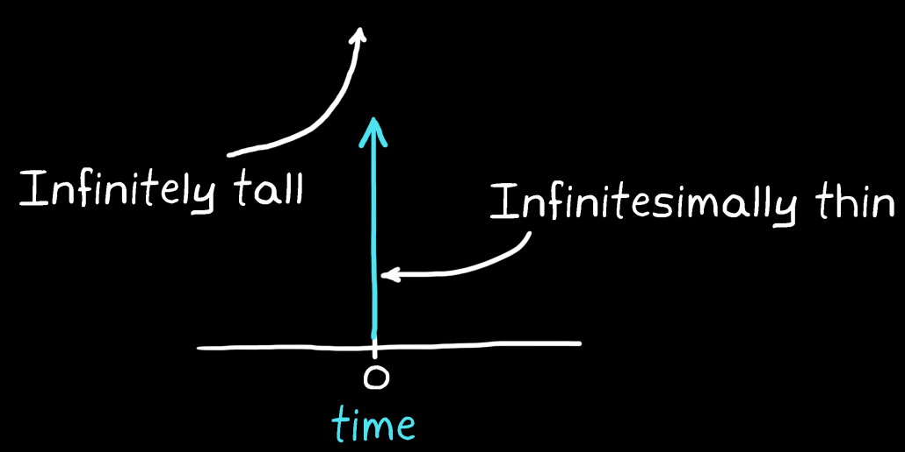
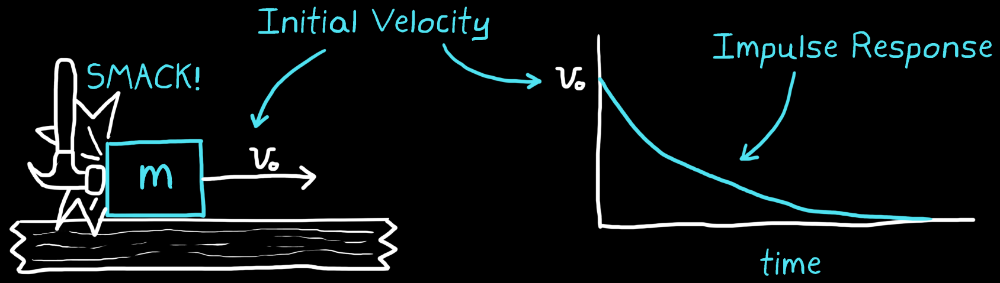
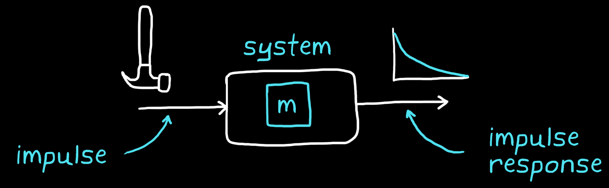

An LTI system can be fully characterized by knowing how a system behaves when an impulse is applied to it. An impulse is a force that has infinite magnitude, applied over an infinitesimally short time window. The resulting change in velocity over time (acceleration) is the impulse response of a system.
Mathematical representation
Mathematically, an impulse force is represented by an impulse function or a Dirac Delta function.
Since it is impossible to draw a line that is infinitesimally thin and infinitely tall, a Dirac Delta function is represented as an arrow pointing up at the time an impulse is applied.

The function returns a value of positive infinity at time zero and a value of zero at all other times.
$$
\delta(t) =
\left\{
\begin{array}{ c l }
+\infty & \quad t = 0 \\
0 & \quad t \neq 0
\end{array}
\right.
$$
Integral of an impulse function
While an impulse function is idealized, it can be approximated by a rectangular pulse with:
A width that is very small
A height that is adjusted to maintain an area of 1
As the width approaches zero, the height approaches infinity, but the area remains constant at 1:
$$
\int^\infty_{-\infty} \delta(t)dt = 1
$$
Application example
Setup
Imagine a block sitting on a table is struck with a hammer. This would be very close to an impulse because the hammer would apply a very large force to the block over a very short period of time. The block would move with an instantaneous initial velocity and start sliding across the table. It would slow down over time due to friction and would eventually stop.

The physical system

Block diagram of an impulse being applied to a system
When the mass comes to rest, it is hit again but with a lower force.
Use of the integral of a dirac delta function
If an infinite force is applied to an object, it would experience infinite acceleration which is not a useful result.
$$\begin{align*}
a(t) &= \frac{F(t)}{m} \\
&= \frac{\delta(t)}{1 \scriptsize\text{ kg}} = \infty
\end{align*}$$
However, if the acceleration is integrated over time, it would yield the object's velocity which is a more useful result. Here, the definition of the integral of an impulse function becomes handy.
$$\begin{align*}
v(t) &= \int^\infty_{-\infty} a(t)dt \\
&= \int^\infty_{-\infty} \frac{\delta(t)}{1 \text{ kg}}dt \\
&= 1 \scriptsize\text{ m\s}
\end{align*}$$
An impulse function can be used to change the state of the system in zero time, or in this case, mathematically give the mass an initial velocity of 1 m/s.
Use of the properties of an LTI system
Assuming the above hammer system behaves like an LTI system, then:
Time invariant
If the impulse is shifted by time $T$, then the impulse response is also shifted by $T$.
Homogeneity
Scaling the input results in an output that is scaled.
Superposition
The motion of the block is the summation of the first impulse response and the second impulse response.